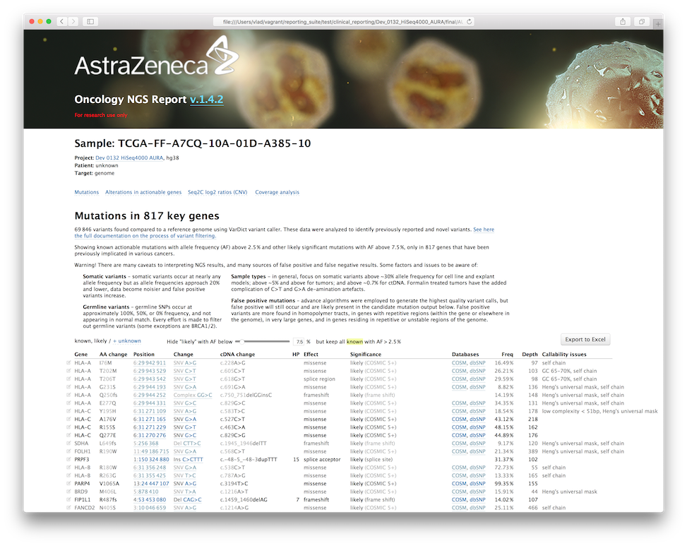

in AZ post-processing pipeline for BCBio-nextgen
Variants are found by VarDict (Lai Z, 2016), a versatile variant caller for cancer samples. In this articles, we focus at the following genomic variants:
And the following types of sequencing assays:
In exomes, the variant are called in a special target called AZ exome, that combines all Ensembl CDS and UTR regions, plus regions from commonly used panels padded by 50pb:
ExomeSNP_ID.bed
FM_T5.bed
IDT_Exome.bed
IDT-PanCancer_AZ1-IDT_orig.bed
IDT_PanCancer_Exons.bed
Illumina_Nextera_Exome.bed
Illumina_TruSeq_Exome.bed
Illumina_TruSight_Cancer.bed
Personalis.bed
SeqCap_EZ_Exome_v3_capture.bed
SureSelect_Human_AllExon_V4.bed
SureSelect_Human_AllExon_V5.bed
Xgen-PanCancer.bed
Variants in form of VCF file are annotated using SnpEff tool that predicts effect of variants on gene function, in respect to RefSeq gene model. We predict based on canonical (longest) transcripts only, except for the following genes where the longest transcript is substituted with a smaller, but more cancer-relevant one:
FANCL NM_018062.3
MET NM_000245.2
CDKN2A NM_000077.4
BRCA1 NM_007294.3
MYD88 NM_002468.4
PPP2R2A NM_002717.3
RAD51D NM_002878.3
RAD54L NM_003579.3
ESR1 NM_000125.3
AKT1 NM_005163.2
FGFR3 NM_000142.4
CD79B NM_000626.2
CHEK2 NM_007194.3
CHEK1 NM_001274.5
The full list is located under canonical_transcripts_hg19.txt (hg19) and canonical_transcripts_hg38.txt (hg38).
SnpEff assigns:
Variants are also searched against the following variant databases:
The first filtering step is performed using vcf2txt.pl script from the VarDict package. It consumes an annotated VCF file from VarDict, annotated as described above, and produces vardict.txt tab-separated file in a specific format. The program (1) performs hard and soft filtering for low quality variants, (2) assigns variant class ("novelty"), (3) assigns variant type (CNV, MNV, deletion, insertion, complex).
Hard filtering (where the variants are discarded) is performed using the following parameters:
Soft filtering (the variants are reported into vardict.txt with a reject reason in the PASS column) is done based on the following:
The thresholds are specified in the run_info.yaml configuration file. Depending on the analysis, it can be either of run_info_ExomeSeq.yaml, run_info_WGS.yaml, or run_info_DeepSeq.yaml; the defaults are pulled from RUNINFO_DEFAULTS.yaml
The mutation class (Var_Class) is assigned in the following order:
COSMIC — any mutation found in COSMICClnSNP_known — any other mutation, labelled significant in ClinVar (3 < CLNSIG < 7)dbSNP_del — deletion found in dbSNPdbSNP — the remaining dbSNP variantsNovel — all remaining variantsThe results of the script are saved under final/YYYY-MM-DD_projectname/var/vardict.txt
This step consumes sample-level vardict.txt files and produces sample-level vardict.PASS.txt. It starts with dropping all soft-filtered variants in the previous step, and then removes cancer non-relevant germline mutations and potential artefacts, and classifies the remaining mutations based on their 'actionability' (see the definition in Carr et al. 2015):
known (highly actionable)likely (could be actionable, but the evidence is more equivocal or limited)unknown (remaining high-quality variants with moderate impact)Also see https://docs.google.com/spreadsheets/d/1JvhO9tEWiSyJPr9-8PWI0-CDT6UrI3D8zR7H0iEePnM/edit?usp=sharing
Germline SNPs occur at approximately 100%, 50%, or 0% frequency, and every effort is made to filter out germline variants. However, some germline variants are important, especially for tumor suppressor genes like BRCA1 and BRCA2. Germline mutations may be of variants of uncertain significance (VUS), and may be relevant when heterozygous, or only when the other allele is also affected in the tumor, further complicating decisions on actionability.
Currently, the following is done in order to filter germline variants:
CLNSIG = 2 (Benign) or 3 (Likely benign), unless actionableunknown variants present in ≥ 40% samples and > 5 samplesVariants are also checked against a list of positions and rules of common germline mutations and artifacts, similarly to actionable lists:
^, e.g.: - ^RBMX G356W 1 Artifact in low complexity
- ^NQO1 P187S 1 Common germline SNP
Variations of lengths of long homopolymers often cause false positives, and require special treatment. For 1-nucleotide MSI of different lengths, a special AF cut-off is set: HP less than 7 units long, the AF cut-off is set to 3%; 8 - 6%; 9 - 12,5% 10 - 17.5%; 11- 25%; 12 - 30%; 12+ - 35%.
knownVariants are checked against a set of rules that defined actionable (known driver) variants. Highly actionable mutations (robust evidence base and/or strong scientific rationale linking the mutation with probable sensitization to drug, and/or high likelihood of response in proposed trial and disease setting) are reported as known.
The rules may specify any specific descriptive feature of a variant, like gene, exon, genomic or protein position and change, genomic or protein region, type of change: deletion, frameshift deletion, insertion, frameshift insertion, indel, etc.
Amino acid changes, exons and codon numbers that define actionable somatic and germline changes:
^TIER1 columnGenomic positions that define actionable germline and somatic variants:
Finally, variants found in ClinVar with a high significance (CLNSIG = 4 — Likely pathogenic or 5 — Pathogenic) are reported as known.
likelyThis class of mutations could be actionable, but no strong evidence supporting it observed. Reported as likely.
Var_Class = dbSNP_del)Var_Class = COSMIC)TIER2 column in specific_mutations.tsvunknownEvidence insufficient to classify as actionable or justify using in patient treatment decision at this time.
CLNSIG = 0 (Uncertain significance) or 255 (other)silent in the Reason column (and reported for driver analysis that compares mutations with silent background)The AF thresholds are set:
For germline actionable mutations, a special threshold is set to 15%.
Thresholds are driven partly by confidence in differentiating real tumor mutations at low AF from artefacts in tumor sequencing data, but also by an assumption that very-low-frequency events may have little or no relevance to tumour progression and treatment response.
When interpreting results, focus on somatic variants above ~30% allele frequency for cell line and explant models, above ~5% and above for tumors, and above ~0.7% for ctDNA.
Mutations belonging to any gene from the following blacklist are always removed:
RBMX
CRIPAK
KMT2C
RBMX2
RBMXL1
RBMXL3
EPPK1 after 2215aa
TYRO3
OR#X# # olfactory genes
HLA-* # unless specified to keep them explicitly
An extended list of genes, exons, and regions is used to de-prioritize mutations in the reports, but does not affect mutation status.
Genes: https://drive.google.com/file/d/0B2wwyQzq0BbwNmg0bzdSeFVFc2s/view?usp=sharing
If the samples are not homogeneous, but come from single sequencer's run, we expect recurring variants to be caused by sequencing artefacts. Also, too common mutations are expected to be germline. For all non-known and non-actionable variants, we calculate the number and the percentage of samples harbouring this variant. If it's more than 40% of all samples and at the same time at least 5 samples, such variants are filtered out. Cohort filtering is done on the stage of merging all sample-level vardict.PASS.txt into the project level vardict.PASS.txt located in final/<datestamp> directory.
vardict.PASS.txt is a tab-separated format that contains one record per protein change (e.g. several lines per genomic change can occur in case of overlapping genes or isoforms, although usually only one transcript per gene is analysed).
Sample TCGA-FF-A7CQ-10A-01D-A385-10
Chr chr1
Start 16757321
ID rs11260920;COSM4590992 IDs in dbSNP and COSMIC databases
Ref G
Alt A
Type stop_gained Effect reported by SnpEff
Effect HIGH Effect impact reported by SnpEff
Functional_Class stop_gained Same as Type
Codon_Change c.1981C>T
Amino_Acid_Change R661*
cDNA_Change c.1981C>T
Amino_Acid_Length 689
Gene MST1L Reported by SnpEff
Transcript_bioType protein_coding Reported by SnpEff
Gene_Coding transcript Reported by SnpEff
Transcript NM_001271733.1 Reported by SnpEff
Exon 15/15 Exome number / total exones, reported by SnpEff
COSMIC_GENE COSMIC uses different gene model rather than SnpEFF (Ensembl-based),
and it also annotates based on genomic position without taking
transcript and gene into consideration, thus we allow mutations only
when COSMIC_GENE equals GENE
COSMIC_CDS_Change c.1981C>T
COSMIC_AA_Change p.R661*
COSMIC_Cnt 11 Number of samples in COSMIC database sharing this mutation
End
Depth 110 Total depth at locus
AlleleFreq 0.1 Allele frequency
Bias 2:2 Strand bias
Pmean 18.1 Mean position in reads
Pstd 1 Position STD in reads
Qual 32.6 Mean quality score in reads
Qstd 1 Mean quality score in reads
SBF 0.0156 Strand Bias Fisher p-value
GMAF Global minor allele frequency based on 1000Genomes
VD 11 Variant depth
RD 99 Reference forward, reverse reads
CLNSIG Clinical significance according to ClinVar (0 - uncertain, 1 - not provided, 2 - benign, 3 - likely benign, 4 - likely pathogenic, 5 - pathogenic, 6 - drug response, 7 - histocompatibility, 255 - other)
CLN_GENE Gene ClinVar (the same situation as with COSMIC, see COSMIC_GENE)
ODDRATIO 5.747 Strand Bias Oddratio
HIAF 0.1048 Allele frequency using only high quality bases
MQ 13 Mean Mapping Quality
SN 22 Signal to noise ratio
AdjAF 2.4
NM 0 Mean mismatches in reads
Shift3 2
MSI Homopolymer length
dbSNPBuildID 120 Version of dbSNP build where that rsID first introduced
GT 0/1 Genotype
DupRate
SplitReads
SpanPairs
N_samples 1 Number of samples in a cohort
N_Var 1 Number of samples in a cohort sharing this mutations
Pcnt_sample 1.000 Percent of samples in a cohort sharing this mutations
Ave_AF 0.100 Average AF of variant in cohort
PASS TRUE
Var_Type SNV
Var_Class COSMIC
LOF YES Loss of function as reported by SnpEff (http://www.sciencemag.org/content/335/6070/823.abstract)
Significance likely Mutation tier
Reason COSMIC_5+, stop_gained Reason to put this mutation into this tier
Incidentalome low complexity gene If mutation overlaps any region with poor callability
Mutations are reported into NGS Oncology reports. For WES and WGS projects, the reports shows only mutations in 817 key cancer genes. If it's a targeted panel (the total number of genes is less than 2000), the target genes are used instead.

By default, only known and likely changes are displayed. Clicking the "+ unknown" link will add unknown changes into the table too.
The changes overlapping regions with poor callability are faded.